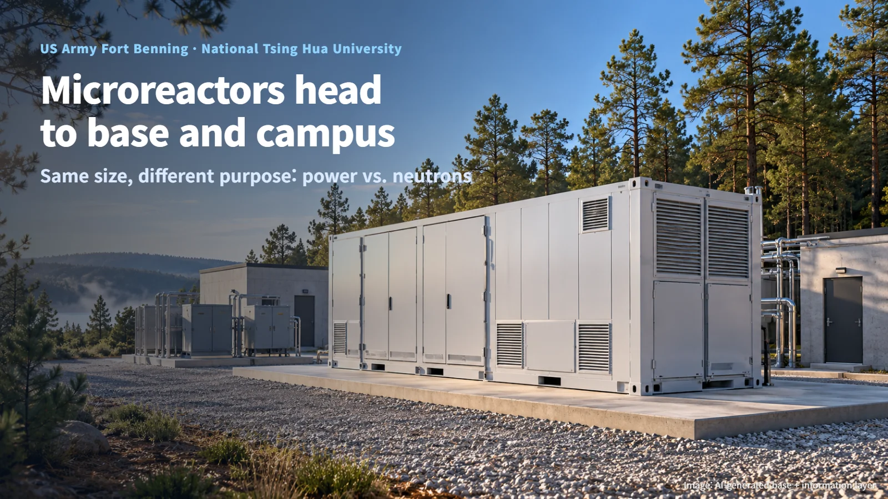
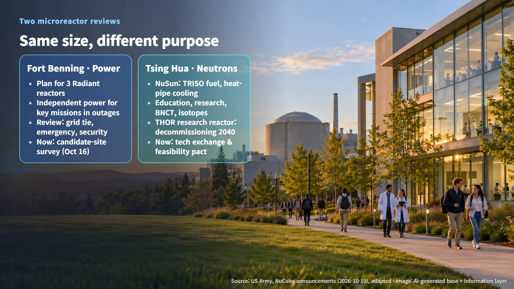
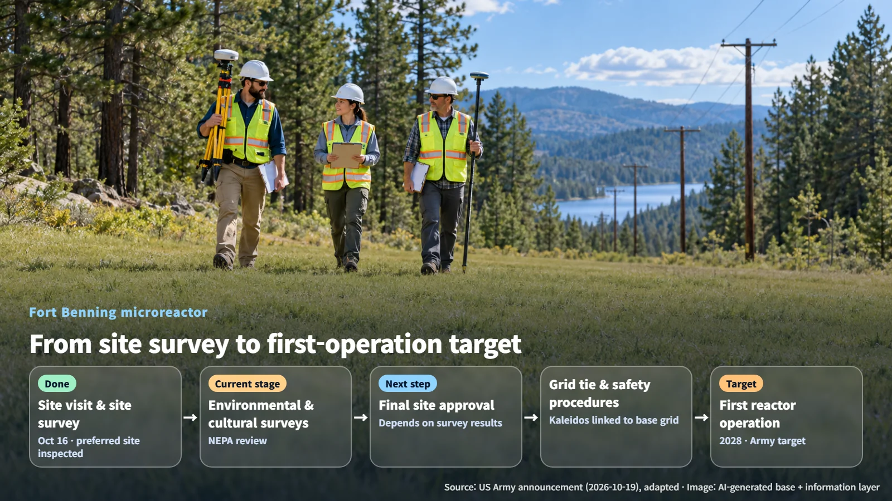

United States · Taiwan · Microreactors
Microreactors Head to an Army Base and a University Campus: Fort Benning and Taiwan's National Tsing Hua University
A US Army base and a Taiwanese university are both studying microreactors, one for outage-proof power and the other for neutrons for research and medicine.
Say "nuclear reactor" and most people picture a giant domed building on a coastline. Lately, though, the news keeps mentioning reactors small enough to fit in a corner of a military base or on a university campus: microreactors. Where will these tiny reactors go first, and what steps do they pass through on the way? Two announcements released side by side on October 19, 2026 offer a useful map: a candidate-site survey at the US Army's Fort Benning, and a cooperation agreement signed by Taiwan's National Tsing Hua University.

A Base That Stays Lit Through Outages: Fort Benning's Three-Reactor Plan
On October 19, the US Army's Fort Benning described the first site visit and microreactor candidate-site survey carried out on October 16 by Janus program partners and Radiant. The base plans to bring in three next-generation microreactors. Radiant would supply, install, operate and maintain them, and the reactors would provide independent power to key mission facilities if the commercial grid goes down.
Even when the grid outside the fence stops, the base's key mission facilities have to keep running. A small reactor inside the base keeping mission facilities lit on a night when the grid has gone dark: that is the picture this plan paints.
At a technical meeting, participants discussed how to connect the Kaleidos reactor to the existing power grid, and base departments, power providers and others took part in reviewing infrastructure layout and candidate sites. Emergency response, physical security and safety procedures were also on the agenda. In other words, the review bundles the reactor's own safety together with power supply at the moment of an outage and the emergency response that goes with it.
The Next Generation of Research Reactors: Tsing Hua and NuSun
According to a NuCube filing dated October 19, Taiwan's National Tsing Hua University signed an agreement for technical exchange and a feasibility assessment of a micro modular reactor on the same day.
The starting point is THOR, the research reactor already on campus. A research reactor uses the neutrons released by fission for experiments, education and medicine. Because THOR is scheduled for decommissioning in 2040, the university is studying whether a new reactor could be sited on campus to continue its nuclear science education, research and medical work. Next to an aging research reactor, the search is on for the spot where the next generation will stand.
The design under discussion, NuSun, uses TRISO fuel and heat-pipe cooling. TRISO fuel consists of tiny fuel kernels wrapped in several ceramic layers, so each particle acts as its own small container that holds in radioactive material. A heat pipe moves heat as a working fluid inside a sealed tube evaporates at the hot end and condenses at the cold end. The two sides plan to explore applying thermophotovoltaic cells (devices that turn the thermal radiation from a hot object into electricity) to NuSun-1, along with design variants for boron neutron capture therapy (BNCT), research and isotope production.
Same Size, Different Purpose: Electricity Versus Neutrons
Both sites want a small reactor, but they want it for different jobs. At Fort Benning, the reactor's job is electricity. That makes heat removal, which keeps heat flowing steadily out of the core, and grid separation, which lets the base disconnect from the outside grid during an outage and keep its own power running, the central review items.
At Tsing Hua, the reactor's job is neutrons. Neutrons are particles inside the atomic nucleus, and they are used in experiments that look inside materials, in isotope production and in medical treatment. In BNCT, boron is first concentrated in cancer cells; the cells are then exposed to neutrons, and the radiation released when boron absorbs a neutron attacks the cancer cells. For uses like these, the experimental facilities that guide neutrons to where they are needed and the shielding that protects people and equipment become the key design features.
Even for reactors of the same size, the core, shielding, heat removal and experimental facility requirements are each reviewed separately depending on whether the goal is electricity or neutrons.

Next Steps: Environmental Surveys and the Feasibility Assessment
Fort Benning addressed environmental review under the National Environmental Policy Act (NEPA) and the protection of cultural resources, and it inspected the preferred candidate site in person. The Army stated that final site approval depends on the results of the environmental and cultural resource surveys. The items to watch next are the completion of those surveys, approval of the final candidate site, and more detailed grid-connection design and safety procedures. First reactor operation in 2028 is a target set by the Army, and the schedule will take shape as the earlier surveys and approvals come in.

National Tsing Hua University and NuCube are at the starting stage of technical exchange and the feasibility assessment. The filing explains that NuSun is first to reach commercial operation in the United States, after which application on the Taiwanese campus is expected. Bringing a reactor to campus will then require design verification, confirmation of a siting and licensing path in Taiwan, a construction permit and procurement. The next points to watch are how the scope of the joint feasibility assessment and the design requirements for research and medical use are made public.
In the end, the path for a small reactor comes down to two questions. Does it fit this site, this grid and the surrounding environment? And what will the reactor be used for? The Army base is finding its answer in backup power for grid outages; the university is finding its answer in the neutrons that will carry on its education, research and medical work. The next time you see a microreactor headline, ask what stage the project has reached and what remains. The news will read much more clearly.